Noms latinsNoms françaisNoms vernaculairesSynonymesLe genre grammatical en BotaniqueCodes de nomenclature
Index
des noms français
Noms français pas encore normalisés.
A
B
C
D
E
F
G
H
I
J
K
L
M
N
O
P
Q
R
S
T
U
V
W
X
Y
Z
...Nommer c'est déjà découper.
Dire : arbre,
c'est perdre l'arbre réel,
sa lenteur organique,
le tremblement particulier d'une feuille dans un vent de novembre,
la manière exacte dont la lumière glisse sur l'écorce à dix-sept heures...
La trahison du Poète
Julie Dratwiak
A
Noms français
-
Abricotier d'argent
Ache faux cresson
Ache nodiflore
Achillée millefeuille (millez feulles) *
Achillée sternutatoire (petite consode) *
Actée en épi
Adonis annuel
Adonis d'été
Adoxe musquée
Aigremoine eupatoire
Aigremoine odorante
Ail à tête ronde
Ail des jardins
Ail des ours
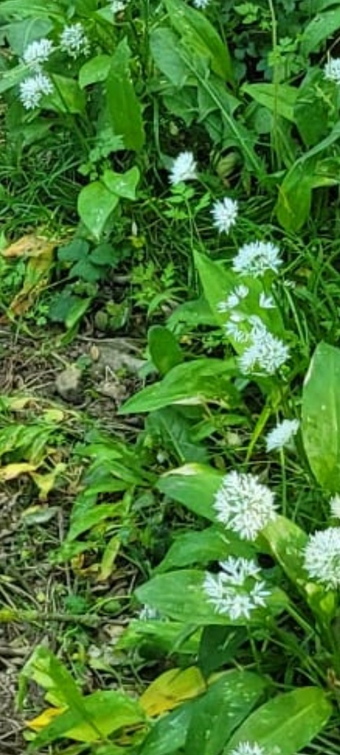
Givry, avril 2026
© Claire Martin-Lucy Ail des vignes
Ailante glanduleux,
Ailanthe
Airelle myrtille
Ajonc nain
Alisier blanc
Alisier de Fontainebleau
Alliaire officinale
Alpiste roseau
Alsine à feuilles étroites ou feuilles ténues
Alysson des montagnes
Amadouvier
Amarante réfléchie
Ambroisie à feuilles d'armoise
Amélanchier
Amourette
Ancolie commune
Andryale à feuilles entières
Andryale sinueuse
Anémone des bois
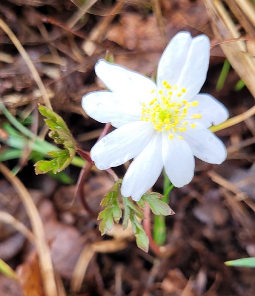
Blannay, 18-03-2024
© Claire Martin-Lucy Anémone fausse renoncule
Anémone pulsatille
Anémone sylvestre
qui n'est pas l'anémone Sylvie
Angélique sauvage
Ansérine des villages
Ansérine patte d'oie
Anthrisque sauvage
Anthyllide vulnéraire
Arabette des sables
Arabette de Thalius
Araucaria du Chili
Arbre aux mouchoirs
Arbre aux quarante écus
Arbre de Judée
Aristoloche clématite
Armoise absinthe
Armoise commune
Arnica des montagnes
Arroche des jardins
Arum d'Italie
Arum négligé
Asaret d'Europe
Asperge des bois
Aspérule à l'eschinancie
Aspérule odorante (franc-muguet) *
Aster amelle
Aster linosyris
Astragale à feuille de réglisse
Aubépine à un style
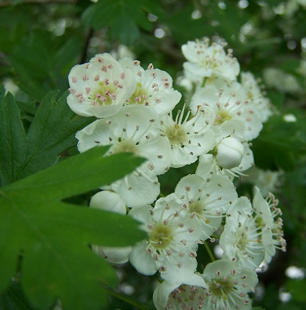
Bessy-sur-Cure, 15 mai 2010 Aubépine à deux styles, aubépine épineuse, aubépine lisse
Aubour
Aubriétie deltoïde
Aulne glutineux
Avoine molle
B
Noms français
- Baguenaudier commun (baguenaudes) *
Baldellie fausse Renoncule
Baldingère faux roseau
Balsamine de l'Himalaya
Balsamine du Cap
Balsamine géante
Bambou
Baobab
Barbarée commune
Barbeau
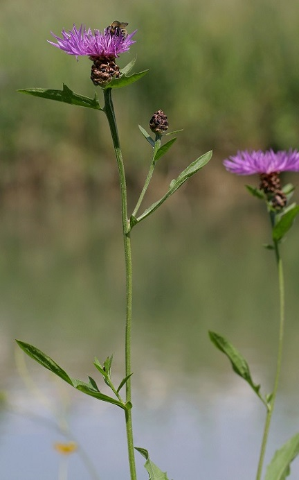
Saint-Florentin, 27 mai 2018
© Daniel Bourget Bardane à petites têtes,
Bardane à petits capitules
Bardane commune
Bardanette en grappe
Belladone (barsines) *
Benoîte des villes
Berbéris commun
Berce commune
Berce du Caucase,
Berce géante
Berce sphondyle
Berle dressée
Bétoine officinale
Bétoine pourpre
Bibacier,
Bibassier
Bident penché
Bident trifolié
Bifora rayonnant
Biscutelle commune
Biscutelle lisse
Blechnum en épi
Bleuet (aubefin, botecornille) *
Bougainvillier
Bouillon-blanc
Bouillon femelle
Bouleau blanc,
Bouleau pendant,
Bouleau pleureur,
Bouleau verruqueux
Bourdaine
Bourrache officinale (bourrochez) *
Bourse à pasteur
Brachypode des bois,
Brachypode penné
Brize tremblante
Brome des bois
Bromus mollet
Brome mou
Brome stérile
Brunelle à grandes fleurs
Brunelle commune
Brunelle laciniée
Bruyère à quatre angles
Bruyère cendrée
Bruyère quaternée
Bryone (naveaulx sauvages) *
Bugle de Genève
Bugle rampante
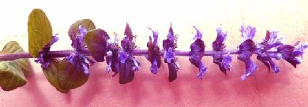
Buglosse d'Italie,
Buglosse azurée
Bugrane fétide,
Bugrane jaune
Bugrane maritime,
Bugrane rampante
Buis
Bunias d'Orient
Bupleurum en faux
Buplèvre à feuilles rondes
Butôme en ombelle
C
Noms français
-
Cacaoyer
Caille-lait jaune
Calament clinopode
Calépine,
Calépine de Corvin,
Calépine irrégulière
Callitriche des étangs
Callune fausse-bruyère
Camomille inodore
Campanule à feuilles rondes
Campanule agglomerée
Campanule raiponce
Campanule gantelée
Canche flexueuse
Cardamine à sept folioles
Cardamine des prés
Cardamine hérissée
Cardamine impatiente
Cardaminopsis de Borbás
Cardère sauvage
Cardère poilue
Carotte commune,
carotte sauvage
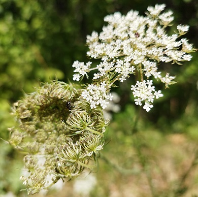
Lucy-sur-Cure, 17 juillet 2025 Carthame laineux
Cèdre de l'Atlas
Centaurée chausse-trape
Centaurée de Hongrie,
Centaurée de Pannonie
Centaurée des teinturiers
Centaurée jaune
Centaurée noire
Centaurée scabieuse
Centranthe rouge
Céphalanthère à grandes fleurs
Céphalanthère rouge
Céraiste aggloméré
Cerfeuil bâtard
Cerfeuil des bois
Cerisier des bois
Cerisier de Ste Lucie
Cétérach
Cétérac officinal
Chanvre cultivé
Chardon aux ânes
Chardon crépu
Chardon des champs
Chardon faux-acanthe
Chardon marbré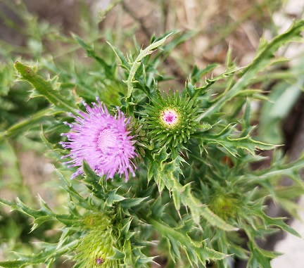
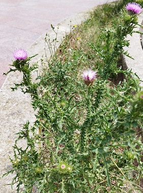
Carduus acanthoides L., 1753, Paris 15e, place Raoul-Dautry devant la Gare Montaparnasse, 3 juin 2026
Chardon marie
Chardon penché
Chardon-Roland
Charme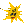
Henri Dès : "Le chardon", chanson pour enfant
Châtaignier
Chélidoine grande éclaire
Chêne à gros fruits
Chêne à gros glands
Chêne de Kerner
Chêne pédonculé
Chêne rouge d'Amérique
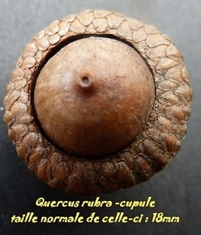
Cupule de Q. rubra Chêne sessile
Chêne vert
Chénopode à graines nombreuses
Chénopode blanc
Chénopode bon-Henri
Chénopode des agglomérations
Chénopode glauque,
Chénopode hybride
Chéorphylle penché
Chèvrefeuille des bois
Chèvrefeuille des haies
Chèvrefeuille des jardins
Chicorée amère, chicorée sauvage, chicorée intube (siccoree)
Chlore perfoliée,
Chlorette
Choin noirâtre
Chrysanthème des blés
Ciboulette
Cicendie filiforme
Cicendie naine,
Cicendie fluette
Cierge maudit
Ciguë tachée
Circée
Cirse acaule
Cirse à feuilles lancéolées
Cirse aranéeux
Cirse bulbeux
Cirse commun
Cirse lancéolé
Cirse des champs
Cirse des marais
Cirse laineux
Cirse maraîcher
Cirse tubéreux
Civette
Clématite bleue
Clématite des haies
Clinopode commun
Cocriste vrai
Colchique d'Automne
Colza
Compagnon blanc
Compagnon rouge (colettes) *
Consoude officinale
Coquelicot (ponceau) *
Est-ce bien lui ? Même sans sa tache ?
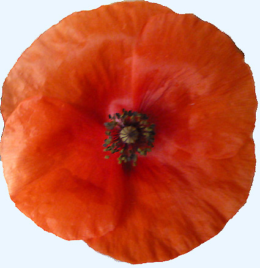
Cormier
Cornouiller mâle
Cornouiller sanguin
Coronille bigarrée
Coronille des jardins,
Coronille faux séné
Corydale bulbeuse
Corydale jaune
Corydale solide
Cotonnière commune
Cotonnière d'Allemagne
Cotonnière des fanges,
Cotonnière des marais
Cotonnière dressée
Cotonnière naine
Cotonnière pyramidale
Coudrier
Crassule mousse
Crépide de Nîmes
Crépide sacrée
Crépis capillaire
Crépis sacré
Cresson amphibie
Cresson de cheval
Cresson de murailles
Cresson des prés
Cresson des bois
Cresson des forêts
Cresson officinal
Crételle des prés
Crocus de printemps,
Crocus des jardins,
Crocus printanier
Cucubale couchée
Cynoglosse officinale
Cytise
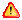
Un arbre toxique.Même au niveau de ses fleurs qui contiennent de la cytisine
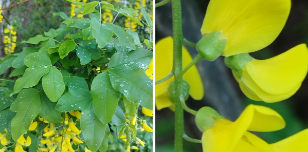
Paris Gare Montparnasse,
Jardin Atlantique, 25 mars 2026
D
Noms français
-
Dactyle aggloméré
Damasonie étoilée
Danthonie
Daphné lauréole
Dauphinelle consoude,
Dauphinelle des champs,
Dauphinelle royale
Dentaire pennée
Dent de lion
Dictame blanc
Digitaire ischème
Digitaire sanguine
Digitale jaune
Digitale pourpre
Diplotaxe vulgaire,
Diplotaxis à feuilles étroites
Dompte venin
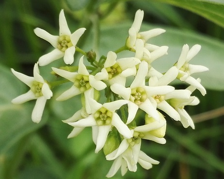
Blannay, 14 juin 2019 Doradille des murailles
Doradille septentrionale
Dorine à feuilles opposées
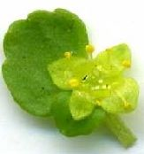
Doronic à feuilles cordées
Drave printanière
Drave de printemps
Dryoptéris écailleux
E
Noms français
- Ébouriffe triangulaire
Écuelle d'eau
Églantier des champs
Élatine à six étamines
Éléocharide des marais
Elléborine à larges feuilles
Élorsier
Épervière cespiteuse
Épervière de Savoie
Épervière des prés
Épervière en ombelle
Épervière piloselle
Épervière précoce
Épiaire bétoine
Épiaire des Alpes
Épiaire des bois
Épiaire des marais
Épiaire droite
Épicéa
Épilobe à petites fleurs
Épilobe en épi
Épilobe hirsute
Épine blanche de mai
Épine noire
Épipactis à larges feuilles
Épipactis de Müller
Épipactis des marais
Épipactis brun rouge
Épipactis pourprée
Épipactis pourpre noirâtre
Épipactis rouge sombre
Épipactis sanguine
Érable champêtre
Érable plane
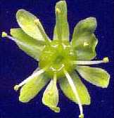
Fleur mâle d'Acer platanoides Érable sycomore
Éragrostis faux-pâturin
Érigère du Canada
Erigéron annuel
Érodium à feuilles de Ciguë
Érophila printanière
Ers velu
Éthuse
Étoile d'eau
Eupatoire à feuilles de Chanvre
Euphorbe à feuilles larges
Euphorbe des bois
Euphorbe de Séguier
Euphorbe douce
Euphorbe épurge
Euphorbe ésule
Euphorbe fluette
Euphorbe petit cyprès
Euphorbe réveil-matin (titimali grand) *
Euphorbe triste
Euphorbe verruqueuse
Euphraise de printemps
Euphraise des champs
Euphraise dressée
Euphraise glanduleuse
Euphraise raide
Éxacule nain
F
Noms français
-
Fallopie de Boukhara
Fausse buglosse pourpre bleu
Fausse Fougère mâle
Fausse Laiche aiguë
Fausse Velvote
Faux baguenaudier
Faux bouillon-blanc
Faux-capillaire
Faux mouron
Faux vernis du Japon
Fenouil commun
Fenouil officinal
Fétuque élevée,
Fétuque roseau
Ficaire à bulbilles
Ficaire fausse renoncule,
Ficaire printanière
Ficoïde à feuilles en sabre,
Ficoïde comestible
Flèche d'eau
Flouve odorante
Flûteau fausse Renoncule
Foin tortueux
Folle avoine
Fontinale commune
Fougère aigle
Fougère des marais
Fougère femelle
Fougère mâle
Fragon
Fraisier des bois
Fraisier vert
Francormier
Fraxinelle blanche
Frêne commun
Fritillaire damier,
Fritillaire pintade
Fromenteau
Fumeterre officinale
Fusain d'Europe
G
Noms français
- Gagée des champs
Gaillet à trois cornes
Gaillet commun
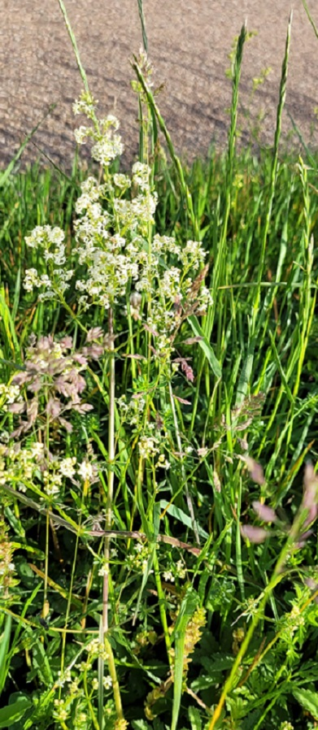
Galium mollugo, Annay-la-Côte, 21 mai 2026
© Claire Martin-Lucy Gaillet croisette (croisee) *
Gaillet de Fleurot
Gaillet des marais
Gaillet de Timeroy
Gaillet gratteron
Gaillet jaune
Gaillet odorant
Galéga
Galé odorant
Galéopsis à feuilles étroites
Galéopsis des champs
Galinsoge ciliée
Garance voyageuse
Gaude
Gazon d'Angleterre
Genêt à balais (genestz) *
Genêt ailé
Genêt des teinturiers
Genêt poilu,
Genêt velu
Genévrier commun
Gentiane ciliée
Gentiane croisette
Gentiane d'Allemagne
Gentiane des marais
Gentiane pneumonanthe
Gentiane pulmonaire des marais
Géranium à feuilles découpées
Géranium à feuilles molles
Géranium à feuilles rondes
Géranium des colombes
Géranium des Pyrénées
Géranium noueux
Géranium sanguin
Germandrée botryde
Germandrée des montagnes
Germandrée en grappe,
Germendrée femelle
Germandrée petit-chêne
Germandrée sauge des bois
Gesse à feuille de Lin
Gesse aphylle
Gesse des bois (nantilles) *
Gesse des marais
Gesse des montagnes
Gesse des prés
Gesse hérissée
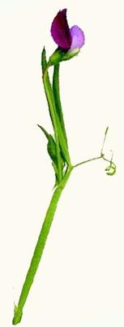
Gesse sans feuilles
Gesse sylvestre (nantilles) *
Gesse tubéreuse
Ginkyo
Girembellier
Giroflée des murailles
Globulaire de Bisnagar
Globulaire de Willkomm
Globulaire ponctuée
Gnaphale des bois
Gnaphale des fanges,
Gnaphale des lieux humides,
Gnaphale des marais
Gnaphale dressé
Gouet maculé
Gouet tacheté
Grande bardane
Grande ciguë
Grande consoude
Grande douve
Grande éclaire
Grande glycérie
Grande joubarbe
Grande mauve
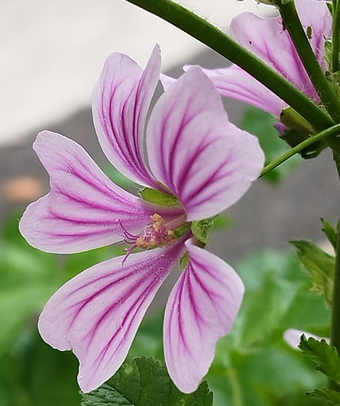
Dans une rue de Courbevoie
(Hauts-de-Seine), 7 mai 2026 Grande pervenche
Grande pimprenelle
Grande toque
Grande utriculaire
Grand plantain
Grand plantain d'eau (la Trible) *
Gratiole officinale
Grémil pourpre bleu
Grémil des champs
Grémil officinal
Griffe de sorcière
Groseillier à grappes
Groseillier rouge
Gui
Gui des feuillus
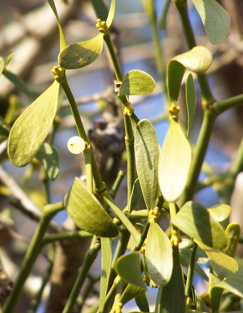
Lucy-sur-Cure, 15 février 2010 Guimauve officinale
Gymnadène à long éperon
Gypsophile des murailles,
Gypsophile des murs
H
Noms français
-
Héléocharis des marais
Hélianthème blanc
Hélianthème des Apennins
Hélianthème taché
Hélianthème vulgaire
Héliotrope d'Europe (remanbrance) *
Hellébore fétide
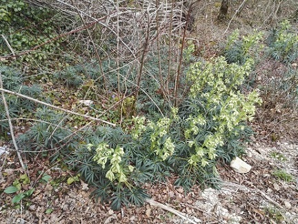
Saint-Moré, 8 mars 2019 Helléborine des marais
Helléborine pourpre
Hépatique à trois lobes
Hépatique des fontaines
Herbe à Robert (bec de sygogne) *
Herbe aux vermisseaux
Herbe-de-saint-Fiacre
Herbe de Sainte Barbe
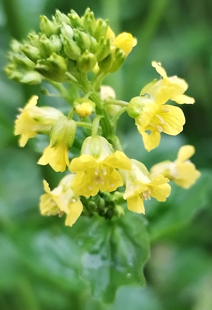
Pont-sur-Yonne, 30 avril 2024 Herbe de Timothée
Hêtre
Hippocrépide en ombelle
Hippuris commun
Houblon (hobelon) *
Houlque laineuse
Houlque molle
Houx
Houx commun
Hylocomie brillante
I
Noms français
- Ibéride intermédiaire,
Ibéris intermédiaire
If, if à baies, if commun
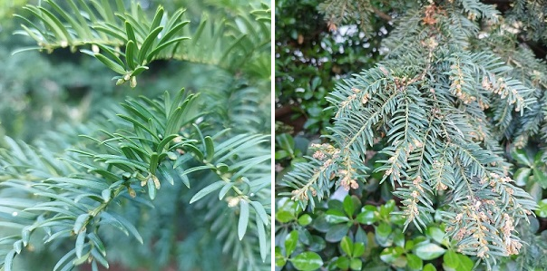
Arbres femelle et mâle,
Courbevoie (Hauts-de-Seine), 22 mars 2026 Immortelle d'Allemagne
Impatience de Balfour
Inule à feuilles de saule
Inule aunée
Inule squarreuse
Iris fétide
Iris des marais (glais d'eau) *
Ivraie multiflore
J
Noms français
-
Jacinthe des bois, jacinthe sauvage
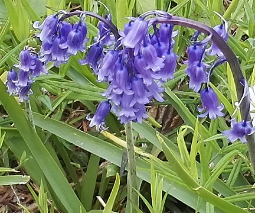
Morvan nivernais, 18-05-2019 Jarosse
Jasione des montagnes
Jonc aggloméré
Jonc bulbeux
Jonc des chaisiers
Jonc des crapauds
Jonc des tonneliers
Jonc diffus
Jonc grêle
Jonquille sauvage
Joubarbe des toits
Jujubier de Maurice
Julienne des dames
K
Noms français
L
Noms français
-
Lâche
Lagure ovale,
lagure queue-de-lièvre
Laiche à épis pendants
Laîche à pilules
Laiche à utricule tomenteux
Laiche blanche
Laiche cuivrée
Laiche de Bohême
Laiche de Haller
Laiche des forêts
Laiche des renards
Laiche digitée
Laiche en épis
Laiche écartée
Laiche glauque
Laiche hérissée
Laiche pâle
Laiche patte de lièvre
Laiche pilulifère
Laiche printannière
Laiteron des champs
Laiteron épineux
Laiteron maraîcher
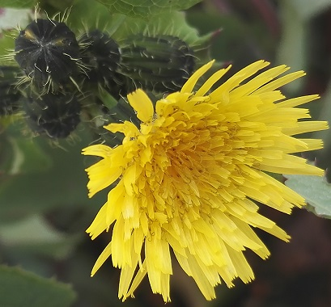
Courbevoie (Hauts-de-Seine), 1-IV-2023 Laiteron piquant
Laiteron potager
Laitue des murailles
Laitue scariole
Laitue vireuse
Laitue vivace
Lamier blanc
Lamier jaune
Lamier jaune à feuilles argentées
Lamier maculé
Lamier pourpre
Lampsane commune
Laser à larges feuilles
Lathrée clandestine
Lathrée écailleuse
Lathrée pourpre
Laurier de St Antoine
Lentillon
Lichen encroûtant jaune
Lierre commun, lierre grimpant
Lierre terrestre (que Dieu marcha) *
Lillet étalé
Limnanthème faux-nénufar
Limodore à feuilles avortées
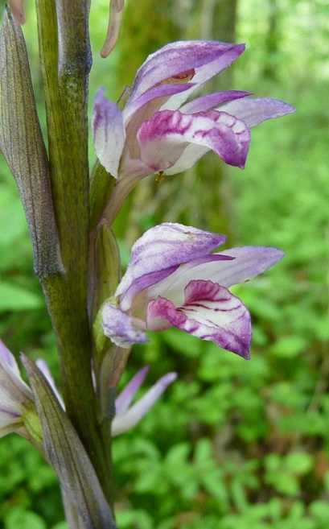
15 juin 2013
Photo © Jean Ygnard Limoine
Limoselle aquatique
Lin à feuilles menues
Lin cathartique
Lin cultivé
Linaire commune
Linaire cymbalaire
Linaire des Alpes
Linaire rampante,
Linaire striée
Linosyris
Linosyris à feuilles de Lin
Liondent hispide
Liseron cantabrique
Liseron des champs
Liseron des haies
Listère ovale
Littorelle à une fleur
Littorelle des étangs
Lobélie brûlante
Longose
Lotier corniculé (muguet des prés) *
Lotier des marais
Lunetière lisse
Luzerne commune,
Luzerne cultivée
Luzerne falciforme
Luzerne lupuline
Luzerne sauvage
Luzerne tachetée
Luzule de Forster
Luzule des bois
Luzule multiflore
Lychnis fleur de coucou
Lycope d'Europe
Lycopode à feuilles de genévrier,
Lycopode à rameaux d'un an
Lycopode des marais
Lycopode interrompu
Lycopside des champs
Lysimaque commune
Lysimaque des bois
Lysimaque nummulaire
Lysimaque ponctuée
M
Noms français
-
Mâche (V. locusta subsp. locusta)
Mâche à carène (V. locusta f. carinata)
Mandragore
Manguier
Marguerite de la Saint-Michel
Marguerite des prés
Marjolaine bâtarde
Maroute
Marronnier commun,
Marronnier d'Inde
Massette à larges feuilles
Matricaire camomille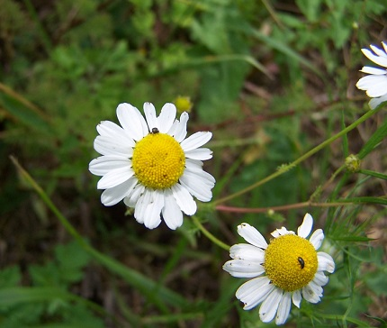
Juin 2011 Matricaire inodore
Matricaire sans ligules
Mauve Alcée
Mauve hérissée
Mauve musquée
Mélampyre à crêtes
Mélampyre des champs
Melampyre des prés
Mélèze
Mélilot blanc
Mélilot élevé
Mélilot jaune, mélilot officinal
Mélique à une fleur
Mélique ciliée
Mélique penchée
Mélitte à feuilles de mélisse
Menthe à feuilles rondes
Menthe aquatique
Menthe australienne
Menthe des champs
Menthe pouliot (polioust) *
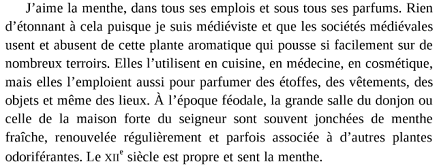
Un vert magnifique (août 2015) in Michel PASTOUREAU,
Une couleur ne vient jamais seule. La Librairie du XXIe siècle © Éditions du Seuil, octobre 2017. Ménianthe trifolié
Mercuriale annuelle
Mercuriale vivace
Merisier vrai
Métaséquoia de Chine
Millepertuis couché
Millepertuis velu
Millepertuis des marais
Millepertuis élégant
Millepertuis perforé
Millepertuis velu
Mille-pieds
Millet des oiseaux
Millet diffus
Mimule tachetée
Minuartie à feuilles menues
Minuartie à petites feuilles
Misopates rubicond
Mnie ondulée
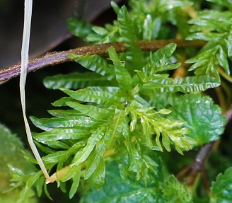
Moehringie trinervée
Molène à fleurs denses
Molène blattère
Molène bouillon-blanc
Molène lychnite
Molène floconneuse
Molène noire
Molène pulvérulente
Molinie bleue
Molinie roseau,
Molinie élevée
Monnoyère à feuilles embrassantes
Morelle douce-amère
Morelle noire
Mouron aquatique
Mouron bleu
Mouron des champs
Mouron des oiseaux
Mousse des jardiniers
Moutarde des champs
Moutarde noire
Muguet de mai
Muflier des champs
Muscari à grappes
Muscari à toupet
Muscari botryoïde
MyosotisDes myosotis aux fleurs pleines de nectar puisque les
collerettes des tubes de leurs corolles sont de couleur jaune orangé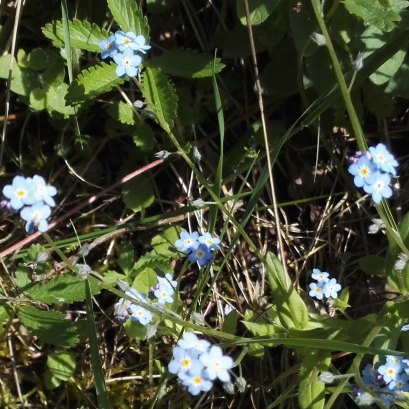
Ces collerettes deviendront blanches dès que
les fleurs auront été fécondées par les insectes butineurs.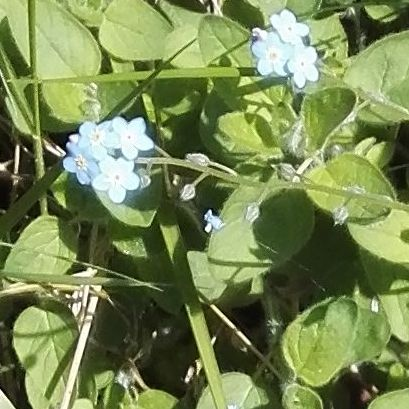
Myosotis des bois
Myosotis des champs
Myosotis des forêts
Myosotis des marais
Myrtille
Myrtillier
N
Noms français
-
Naïade majeure,
Naïade marine
Narcisse des poètes
Néflier d'Allemagne
Néflier du Japon
Nénufar blanc
Nénufar jaune
Néotinée brûlée
Néottie nid d'oiseau
Nerprun cathartique
Nerprun purgatif
Neslie paniculée
Nielle des blés
Nigelle de Damas
Nigelle des champs
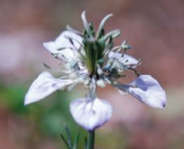
© Marc Douchin - AIB Noble épine
Noisetier
Noyer
Noyer du Japon
Noyer noir
O
Noms français
- Obier
Odontite de printemps
Odontite rouge
Œil-de-perdrix
Œillet Arméria
Œillet des chartreux
Œillette
Œnanthe à feuilles de Silaüs
Œnanthe fistuleuse
Œnanthe intermédiaire
Onagre bisannuelle
Ophioglosse
Ophrys abeille
Ophrys abeille à longs pétales
Ophrys araignée
Ophrys bourdon
Ophrys frelon
Ophrys litigieux
Ophrys mouche
Ophrys petite araignée
Ophrys verdissant
Oranger des Osages
Orchis à fleurs lâches
Orchis bouc
Orchis bouffon
Orchis brûlé
Orchis couleur de chair
Orchis de Fuchs,
Orchis de Meyer
Orchis de Traunsteiner
Orchis homme-pendu
Orchis incarnat
Orchis mâle
Orchis militaire
Orchis moucheron
Orchis pourpre
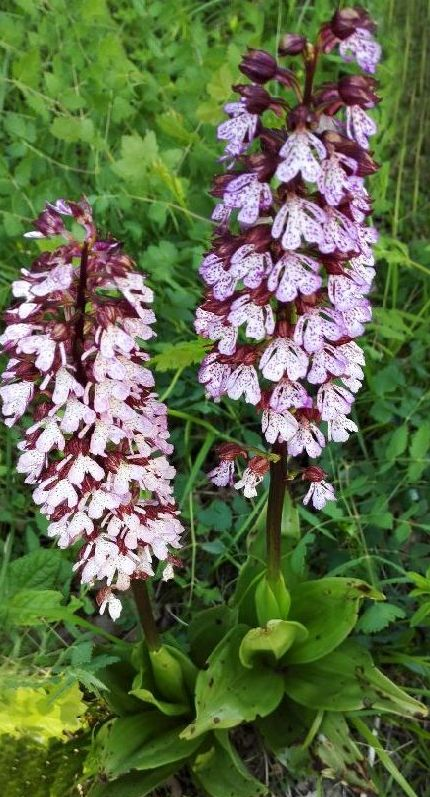
Mi-mai 2017 Orchis pyramidal
Orchis singe
Orchis tacheté
Orge des rats
Origan vulgaire
Orme blanc
Orme champêtre (homeau) *
Orme lisse, orme pédonculé
Ornithogale des Pyrénées
Ornithogale en ombelle
Ornithope délicat
Orobanche
Orobanche blanche
Orobanche d'Alsace
Orobanche de la picride
Orobanche du genêt
Orobanche du lierre
Orobanche du picris
Orobanche du thym
Orobanche pourprée
Orobanche violette
Orpin blanc
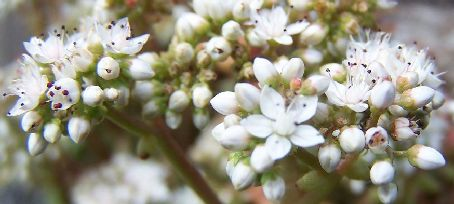
Noyers-sur-Serein, 22 juin 2016 Orpin brûlant
Orpin reprise
Ortie dioïque
Ortie royale
Oseille des prés
Osier rouge
Osmonde royale
Oxalide droit
Oxalis corniculée
Oxalis droit
Oxalis petite oseille
Oxybaside des villes
Oxybasis des villes
P
Noms français
-
Pacanier
Panais,
panais cultivé,
panais sauvage
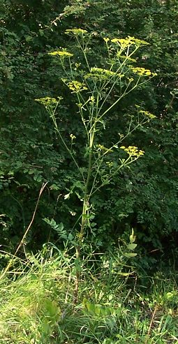
Pastinaca sativa L. Panicaut champêtre
Panicaut de mer,
Panicaut des dunes,
Panicaut maritime
Pâquerette vivace (margarites) *
Pariétaire de Judée
Parisette à 4 feuilles
Parmélie des murailles
Parnassie des marais
Passerage drave
Passerage des champs
Patience à feuilles obtuses
Patience sanguine
Patte d'ours
Pâturin annuel
Pâturin commun
Pâturin des bois
Pâturin des forêts
Paulownia
Pavot de Californie
Pavot douteux
Pavot officinal
Pavot somnifère
Pédiculaire des bois
Pédiculaire des forêts
Peigne de Vénus
Perce-neige (primeveize) *
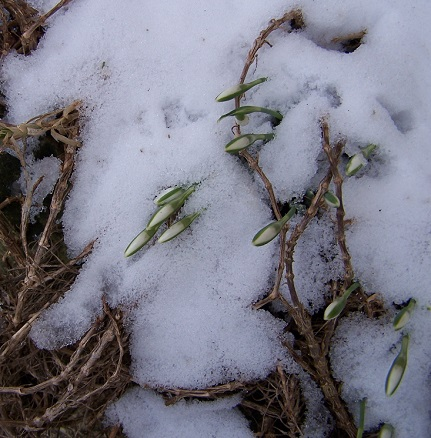
Lucy-sur-Cure, 17 février 2010 Persil des montagnes
Pesse, pesse d'eau
Pétasite hybride
Pétasite des Pyrénées
Petit boucage
Petit buglosse
Petit cocriste
Petit Éragrostis
Petit rhinante
Petite berle
Petite centaurée commune
Petite centaurée délicate
Petite ciguë
Petite coronille
Petite douve
Petite pervenche (prevanche) *
Petite pimprenelle
Petite scorsonaire
Peucédan de France,
Peucédan de Paris
Peucédan des marais
Peucédan herbe aux cerfs
Peuplier blanc
Peuplier tremble
Phacelie à feuilles de tanaisie
Phalangère à fleurs de lys
Phalangium rameux
Phénope des murs
Phléole des prés
Picride fausse Épervière
Picride (fausse) Vipérine
Pied de coq
Pigamon jaune
Piloselle gazonnante
Piloselle officinale
Pilulaire, pilulaire à globules
Piment royal
Pimpinelle saxifrage
Pimprenelle à fruits réticulés
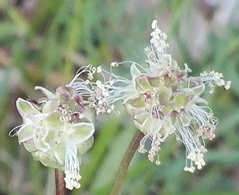
Ou petite pimprenelle
Avigny, 19 mai 2018 au déclin du jour Pin d'Orégon
Pin des Landes
Pin de Weymouth
Pin maritime, pin mésogéen
Pin noir d'Autriche
Pin sylvestre
Pirole unilatérale
Pissenlit
Pivoine mâle
Plantain d'eau à feuilles lancéolées
Plantain d'eau commun
Plantain lanceolé (herbe au char[penti]er) *
Plantain majeur
Plantain moyen
Platane à feuilles d'érable
Platane commun
Platanthère à deux feuilles
Platanthère à fleurs vertes
Podagraire
Poirier sauvage
Polygala amer
Polygale commun
Polygale des sols calcaires
Polypode vulgaire
Polystique à aiguillons
Polystic à frondes munies d'aiguillons
Polytric élégant
Pommier sauvage
Populage des marais
Porcelle enracinée
Potamot crépu,
Potamot à feuilles crépues
Potentille argentée
Potentille des marais
Potentille dressée
Potentille faux fraisier
Potentille printanière
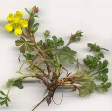
Potentille rampante
Potentille tormentille
Pourpier cultivé
Prêle des champs
Prêle d'Hiver
Prêle géante
Primevère d'Angleterre
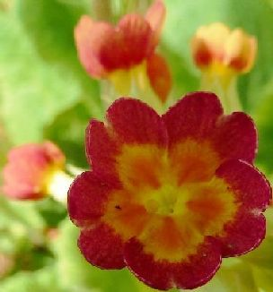
Primula x anglica Pax, 1889 Primevère des bois
Primevère officinale
Prunellier
Pulicaire dysenterique (paqueretez d'eau) *
Pulmonaire à feuilles longues
R
Noms français
- Raiponce en épi
Raiponce orbiculaire
Raisin d'Amérique
Ravenelle
Ray grass anglais
Reine des prés
Renoncule âcre
Renoncule à feuilles capillaires
Renoncule à feuilles d'aconit
Renoncule à feuilles d'ophioglosse
Renoncule à tête d'or
Renoncule bulbeuse
Renoncule de Drouet
Renoncule de Sardaigne
Renoncule flottante
Renoncule langue
Renoncule rampante
Renoncule scélérate
Renouée à feuilles de Patience
Renouée bistorte
Renouée d'Aubert,
Renouée de Chine
Renouée des oiseaux
Renouée du Japon
Renouée-liseron
Renouée persicaire
Renouée poivre d'eau
Réséda des teinturiers
Réséda jaunâtre
Réséda jaune
Rhinanthe crête de coq
Robinier faux-acacia
Ronce blanchâtre
(ou ronce de l'Etna ?)
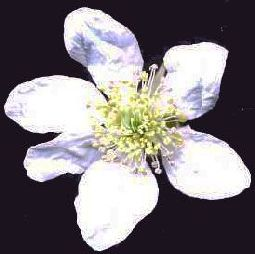
Fleur de Rubus canescens Ronce bleuâtre
Roseau, roseau commun
Roseau des bois
Rossolis à feuilles rondes
Rossolis intermédiaire
Rubanier dressé
Rubanier émergé
Rubéole des champs
Rue des murailles
Rue fétide
Rue officinale
Rumex crépu
Rumex petite oseille
S
Noms français
-
Sabline à feuilles étroites ou à petites feuilles
Sabline à trois nervures
Safran
Safran bâtard
Sagittaire en flèche
Sainfoin
Salicaire
Salsifis à feuilles de poireau
Salsifis cultivé
Salsifis des prés
Sanicle d'Europe
Sanicule
Sapin de Douglas
Saponaire officinale
Sarrasin
Sarrette des teinturiers
Sarriette commune
Sauge des prés
Saule cendré
Saule fragile
Saule marsault
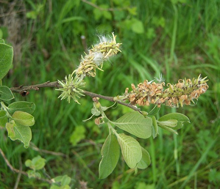
Chatons femelles - 15 mai 2010 Saule pourpre
Saule rampant
Savonnier
Saxifrage à trois-doigts
Saxifrage granulifère
Scabieuse colombaire
Sceau de Salomon multiflore
Sceau de Salomon odorant
Sceau de Salomon officinal
Scille à deux feuilles
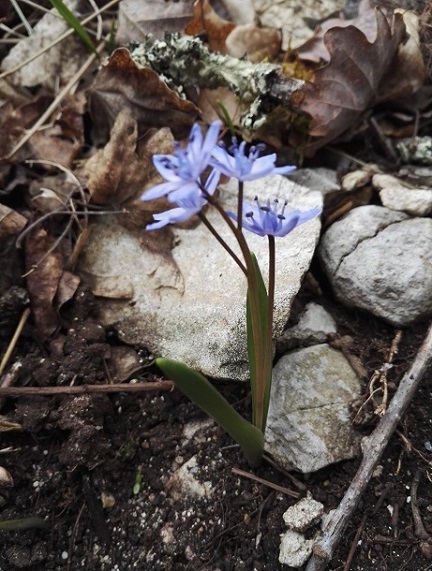
Saint-Moré, 8 mars 2019 Scille d'automne
Scille penchée
Scirpe des bois
Scolopendre
Scrophulaire aquatique
Scrophulaire noueuse
Scutellaire à casque
Sébestier
Sédum âcre
Séneçon à feuilles de Roquette
Séneçon commun
Séneçon de Fuchs
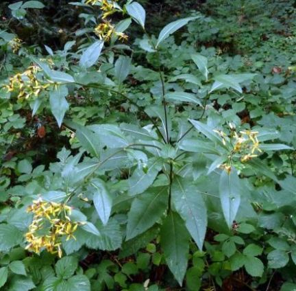
Dans le Morvan, été 2015 Seneçon de Mazamet
Séneçon des marais
Seneçon du Cap
Séneçon jacobée
Sénevé
Sensitive
Séquoia de Chine
Serpolet couché
Serratule des teinturiers
Séséli des montagnes
Seslérie blanchâtre, seslérie bleue
Sétaire verte
Shérardie des champs
Sieglingie retombante
Silaüs des prés
Silène à bouquets
Silène à feuilles larges,
Silène à larges feuilles
Silène commun
Silène fleur de coucou
Silène penché
Sison,
Sison amome,
Sison aromatique
Sisymbre de Loesel
Sisymbre irio
Sisymbre officinal
Solidage du Canada
Solidage glabre
Sorbier
Sorbier des oiseaux
Sorbier des oiseleurs
Souci des champs
Spéculaire
Spargoute des champs
Spergulaire rouge
Spergule des champs
Sphaigne des marais
Spinulum interrompu
Spiranthe d'automne,
spiranthe spiralée
Stellaire des bois
Stellaire des sources
Stellaire graminée
Stellaire holostée (bec d'oyseau) *
Stellaire intermédiaire
Stipe pennée
Stramoine
Succise des prés
Sumac Amarante,
Sumac hérissé
Sureau à grappes,
Sureau de montagne
Sureau hièble
Sureau noir
T
Noms français
- Tabouret des montagnes
Tamier commun
Tanaisie
Téesdalie à tige nue
Théliptéris des marécages
Thélyptéris des marais
Thésium couché
Thym précoce
Tilleul à grandes feuilles
Tilleul des bois
Tordyle majeur
Torilis des champs
Torilis du Japon
Torilis noueux
Trèfle commun
Trèfle d'eau
Trèfle des champs
Trèfle douteux
Trèfle fraise,
trèfle fraisier
Trèfle jaune champêtre
Trèfle rampant
Trèfle pourpré
Trèfle rougeâtre (sousperantvin) *
Tremble
Trinia vulgaire
Trinie glauque
Trinie commune
Tristagna à une fleur
Troène
Troène vulgaire
Tubéraire tachetée
Tulipe de Gaule
Tulipe des bois
Tulipier de Virginie
Tussilage
U
Noms français
V
Noms français
-
Valériane officinale
Vanille
Vélaret
Vélar irio
Vélar odorant
Vélar officinal
Verge d'or
Verge d'or tardive
Vergerette annuelle
Vergerette du Canada
Verne
Véronique à écus, véronique à écusson
Véronique à feuilles de Lierre
Véronique à feuilles de Serpolet
Véronique agreste
Véronique de Perse
Véronique des ruisseaux
Véronique mâle
Véronique officinale
Véronique Petit-chêne
(Ne me obliez mie) *
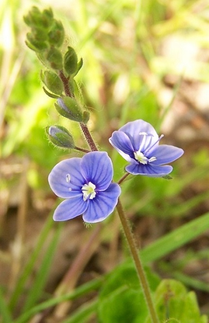
Les Bries, 29 avril 2010 Véronique des montagne
Véronique précoce
Verveine officinale
Vesce à feuilles étroites
Vesce à quatre graines
Vesce craque
Vesce cultivée (jarveau) *
Vesce de Russie
Vesce des haies
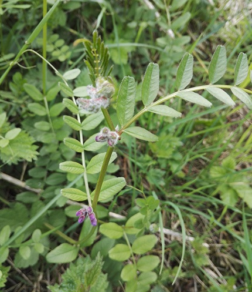
Auxerre, Coulée Verte,
sortie AIB du 15 avril 2018 Vesce des moissons
Vesce hérissée
Vigne cultivée
Vigne-vierge à trois pointes
Violette à feuilles de pêcher
Violette de Cry
Violette de Reichenbach
Violette de Rivinus
Violette des bois
Violette des champs
Violette des marais
Violette hérissée
Violette odorante (viollete de Mars) *
Violette tricolore
Viorne commune
Viorne lantane
Vipérine commune
Vrillée de Bal'dzhuan
Vrillée de Chine
Vulpin des champs
Y
Noms français
- Yeuse
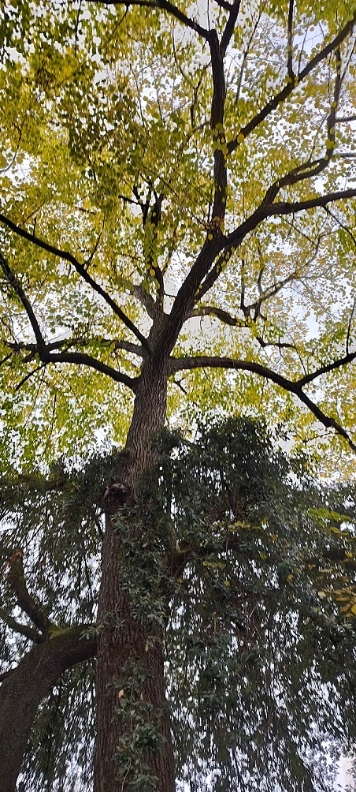
Yeuse ou chêne vert plus que bicentenaire
Ivry-sur-Seine (Val de Marne), 12 novembre 2026
Merci à Marco Ponzi pour sa mise en ligne très botanique de cet ouvrage de Jean Bourdichon (vers 1468-1521), une mise en ligne que nous n'avons découverte qu'en 2024 et qui vient de nous aider à améliorer cette page.
Noms latinsNoms françaisNoms vernaculairesSynonymesLe genre grammatical en BotaniqueCodes de nomenclature